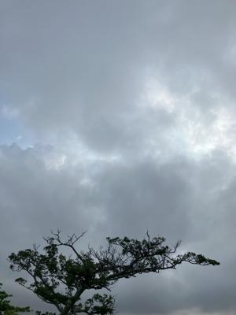
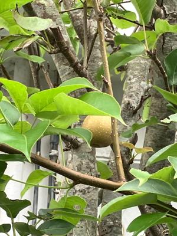

うるがいの話 ある日
最新: 梨の実？【うるがいの話 ある日】とは 一日だけのプログです
『うるがいの話』の最新一日だけのプログで、通信料が少なく経済的だ。カニの画像をクリックすると全ての日付が載る『うるがいの話』サイトを表示します
|
|
【うるがいの話】 うるがい(ｳﾙｶﾞｲ urugai)とは、『もずくがに』の名前でとても大きくなります。 |
|---|---|
|
|
【カミマヤーの話】 猫のことを方言でマヤーといいます。カミマヤー（kamimayaa）とは、神の猫のことです。 |
|
【たながぁの音楽】 たながぁ（ﾀﾅｶﾞｰ tanagaa）とは手長えびのことで、何種類かあり大きいのは車 エビぐらいになります。 |

|
【ぶながぁの話】 ぶながぁ(ﾌﾞﾅｶﾞｰ bunagaa)とは、赤い髪の毛、赤い身体、そして身長は１ｍ２０ｃｍ ぐらい、川の蟹を食べているの目撃された。場所は沖縄県国頭郡大宜味村のと ある村僕の隣近所に住んでいる爺さんから、聞いた話です。 |
|
|
【ギーマの話】 ギーマ(giima)とは、山原の里山に咲くスズランに似た、 花を付けます。実は食べられます、 気が付くと口の周りが紫になっています。 |
2024年04月29日 (月）梨の実？
15:23

ウォーキングコースの途中、とある民家の木に梨の実らしき物がある。大き
さは、５センチぐらいだが。昨年亡くなったイサの家では梨を育てていたと
いう。可能性はあると思う。

ヨメが、昼まえ高級テレビが直ったと喜んだ。昨日の午前、テレビの録画状
態の表示がおかしいと騒いでいた。『予約できませんでした。ＢＤＲ－ＢＤ
Ｚ－ＦＢＷ１１０が見つかりません。』とエラーが表示される。フムフム原
因は、掃除のときルーターのＬＡＮケーブルを繋ぎ変えたからである。マニ
ュアルを読みなおし、ＬＡＮケーブル接続を何度も繰り返すが上手くいかな
い。午後中に疲れ果て諦めた。果報は寝て待て、修復するまで（テレビとレ
コーダー同士の機器）に半日以上かかるということだ。ネットにも乗ってい
ない、家電製品が複雑になっている。老人達は、あきらめるだろうなとふと
思う。今日は、雨が降ったり止んだりの天気である。ま、降りぱなっしでは
ないのでまだマシか。
１５時１３分 ビットコインの総資産 ￥２８、３８５（↓９８７）